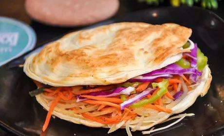
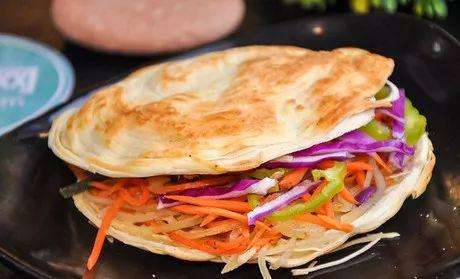
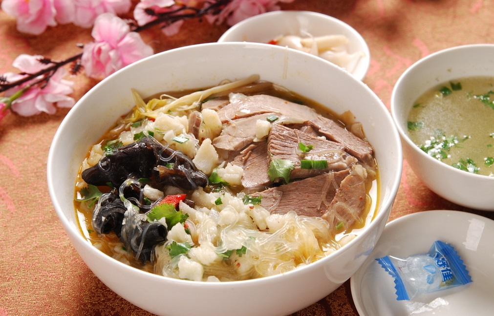
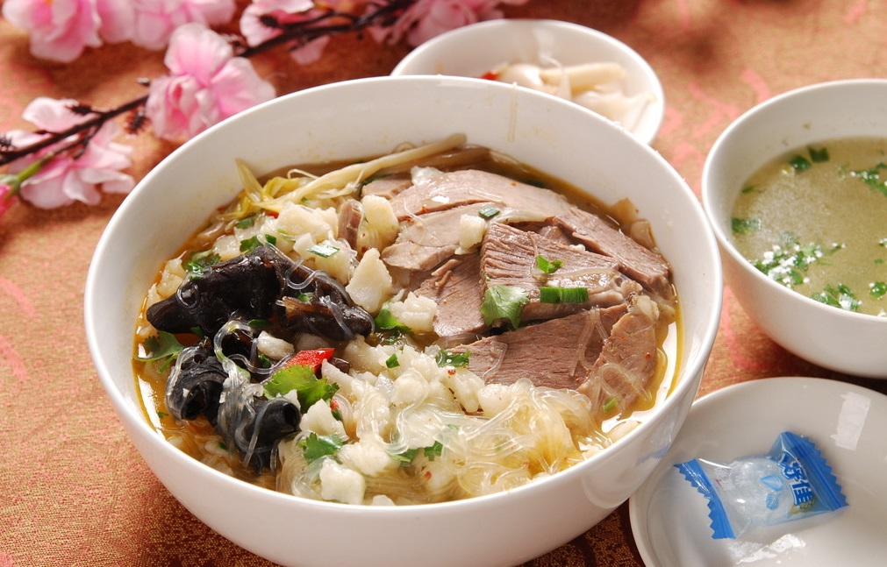
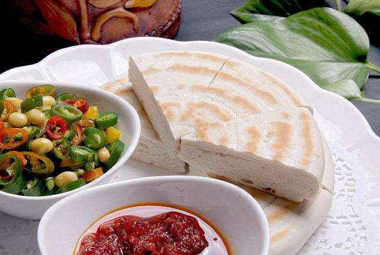

早餐
 

从中医养生角度讲，早上要补阳气，早餐我们将为您提供豆花泡馍、菜夹馍还有米粥等等。
午餐
 

午餐（又名午饭、中餐、中饭等等），在中国大陆，午餐的用餐时间通常是上午十一点至下午一点的两个小时。人们认为中餐是一天中最重要的一餐，也是食物和能量的主要补充，因此我们为顾客准备了羊肉泡馍、臊子面、搅团等特色美食，分量足，充分表现出陕西人的厚道与豪放，也体现出了我们企业“给顾客最佳体验”的宗旨。
晚餐
